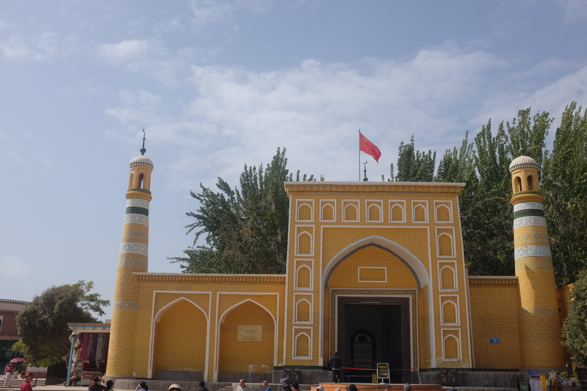

A day of rest and reflection.
I start the day with a run. Then I get two 烤包子 for the road. I find a coffee shop, and do some more reading of that book. I think I’ll finish it before the end of this trip – my first full book in Chinese.
I go back to the hostel to check out, and chat with the owner for a little bit before checking out. I pass by Id Kah Mosque (艾提尕爾清真寺) one more time – it’s still quiet – before jumping into a cab to the airport. So many more Han Chinese faces again.

---
Random thoughts:
Kashgar Time seems to be a thing: people start the day at 10 or 10:30, and the night activities pick up at 22:00. Even the driving trip tour through the week started around 10:00, and would be around 12:00 by the time we’d arrive anywhere. People constantly referred to the time zone as “Beijing Time” as if they operated on tacit time – and unspoken clock that was wound two hours later. Makes sense, since it lies closer to central Asia than it does to the eastern coast of China where Beijing is.
I asked the driver if he thought the mountains were impressive, and he said that he sees them everyday and so he’s more impressed by mountains in other parts of China. I then wondered if he would ever have a chance to visit those places. He said it was incredibly hard to get a passport since ethnic people are not encouraged to go abroad to get any ideas on rebellion. He probably will be here, in this province, for the rest of his life (he did tease the fact of us driving to Ürümqi). But he wasn’t doom-and-gloom about it; countless times he spoke of the great benefits that the government has provided for the development of the region. And I see it, too – there are hoards of tourists who need rides into national parks. This place will only grow in tourism as more people find out about it.